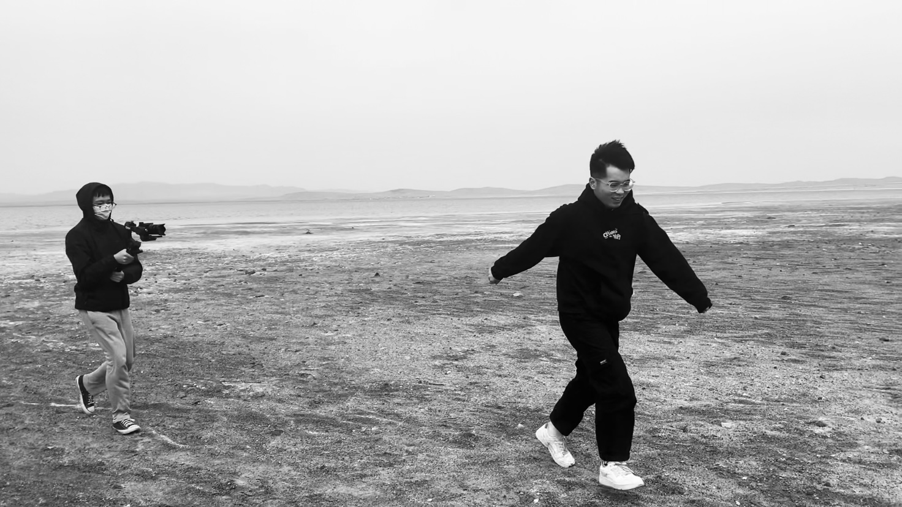
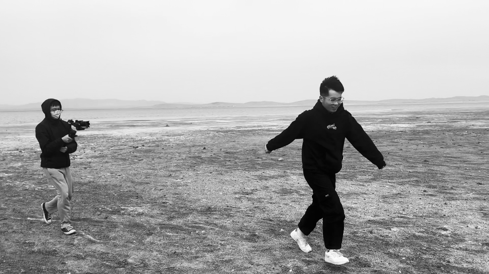

Dimension
Four dimensions to construct your way to tkink about Cultural Geography.
Read MoreBHG (Beijing Human Geography) is a popular science teaching website
includes many historic sites and scenic spots offers a multi-dimensional way of thinking.
Our mission is to "let the story of geography embrace culture".
It wasn’t raining when Noah built the ark.
– Howard Ruff
Using new way to rechieve every deed.
Back to Top>
To Map Now!>
Human Geography
discusses the geographical distribution,
diffusion and change of various human phenomena, as well as the formation and development laws of the
regional structure of human social activities.
It is an important part of the geography discipline system and one of the two main branches of geography.
New progress has been made in the study of time-space behavior. The application of human geography and urban and rural planning is increasing, and the development trend of multi-discipline, new data, new methods and new theories is gradually formed. Based on these concepts, the applied research of time-space behavior emphasizes the transformation and optimization of natural, social, economic and built environment to meet the dynamic needs of individuals and groups for better quality of life and support the human-centered sustainable development goals.
The changes of human geography in the time dimension can be realized by dragging the time scroll on the map. You can trace the changes of the wind and wind in Beijing over hundreds of years, immersing yourself in the poetry recited by the years and immersing yourself in the picture scroll painted by the years. Human geography changes at a glance, you can learn with a changing perspective, enrich your knowledge, broaden your vision.
By studying human geography, raises the people to their surroundings and the outline of the different cultural characteristics of the earth's surface, on the one hand, able to appreciate the wonderful infinite universe, on the other hand can correctly evaluate the living conditions of people, concerned about the quality of the environment and human habitat for posterity, can use in your personal life reliable enough knowledge of geography,
To assume responsibility for solving local, regional and international problems.
 

There's only one corner of the universe you can be sure of improving,
and that's your own self.
Quick Start of the web.
Back to Top>
To Map Now!>
When we learn, we will feel something, and notebook on our website provides users with a free space to take notes. Notebook features a rich text box that provides bold fonts, font color changes, font highlighting, and font size changes. Meet the user's needs for beautiful notes.
Interactive Quiz Module, provides effective assessment and consolidation for the key knowledge points. Interactive Quiz Module aims to assist client in building stronger connection between plain description and comprehension. The module can accommodate a different number of questions for each knowledge point, and will give you an accurate evaluation based on how well you answered the questions.
There is no garden without its weeds.
Wasting time is robbing oneself.
Well Typesetting, a comfortable knowledge of Beijing's human geography.
Back to Top>
To Map Now!>
Gorky once said that books are the ladder of human progress.
Nature
Military